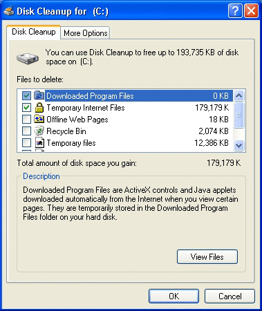

title: Creating a Disk Cleanup Handler description: One axiom proven time and again in the world of computers is that regardless of the size of your computer's storage capacity, you will eventually fill it up. ms.assetid: f85e0db7-fbdb-452e-90c8-672f716b5692 keywords:
One axiom proven time and again in the world of computers is that regardless of the size of your computer's storage capacity, you will eventually fill it up. While the average size of a computer's hard disk has increased dramatically over time, applications have also grown accordingly, leaving users looking for ways to create more free hard disk space. Available space is also reduced by the many temporary files that applications create for backup or performance reasons. When disk space becomes low, it becomes necessary to reduce the amount of space used by applications. Disk space can be freed using a variety of means, including the following:
Files that are good candidates for cleanup include:
Deletion is particularly appropriate for files that the user will never need again for example, files that are temporarily cached for performance reasons. Deletion is also appropriate for files that are easily restored, such as graphics files that can be reloaded from an installation CD. Files that the user might need later or that would be difficult to reconstruct are better candidates for compression or backup.
Expecting a user to manually clean the file system is not a good solution. The user may not know where many of the files are located or how to recognize which ones can be safely removed. In addition, there's the risk that the user might delete essential files.
The following facets of the Disk Cleanup utility are discussed in this topic.
Starting on Windows 98, the Windows operating system includes Disk Cleanup, a utility that makes it much easier for the user to manage available hard disk space. The Disk Cleanup utility is designed to free up as much disk space as possible and decrease the risk that the user will delete essential files accidentally.
Disk cleanup can be initiated in three ways.
The basic challenge inherent in disk cleanup is to free as much disk space as possible without deleting essential files. Because there is no standard way to mark files for cleanup, no single application can reliably detect and clean all unessential files. The Disk Cleanup utility addresses this problem by splitting the cleanup operation between a single disk cleanup manager and a collection of disk cleanup handlers.
When the Disk Cleanup utility is run, the user sees the following dialog box. (If more than one disk or disk partition exists on the computer, the user is first asked to choose a drive before this dialog is displayed.)

The disk cleanup manager is part of the operating system. It displays the dialog box shown in the preceding illustration, handles user input, and manages the cleanup operation. The actual selection and cleanup of unneeded files is done by the individual disk cleanup handlers shown in the disk cleanup manager's list box. The user has the option of enabling or disabling individual handlers by selecting or clearing their check box in the disk cleanup manager's UI.
Each handler is responsible for a well defined set of files. For example, the selected handler in the illustration is responsible for cleaning up downloaded program files. The handler selected in the illustration also provides a View Files button. By clicking the button, the user can request that the handler display a UI typically a Windows Explorer window that allows the user to specify which files or classes of files to clean.
Although Windows comes with a number of disk cleanup handlers, they aren't designed to handle files produced by other applications. Instead, the disk cleanup manager is designed to be flexible and extensible by enabling any developer to implement and register their own disk cleanup handler. Any developer can extend the available disk cleanup services by implementing and registering a disk cleanup handler.
All applications that produce temporary files can and should implement and register a disk cleanup handler. Doing so gives users a convenient and reliable way to manage the application's temporary files. When you implement the handler, you can decide which files are affected and determine how the actual cleanup happens.
Cleanup handlers are in-process server Component Object Model (COM) objects. Windows provides an existing handler object called the DataDrivenCleaner for your use. You can also opt to implement a handler yourself for more flexibility. These objects then allow you to specify how to select files, free disk space, and, in the case of an implemented handler, display the optional UI for more granular control. This section addresses the matter of implementing your own handler. For details concerning the use of the DataDrivenCleaner object, see Using the DataDrivenCleaner Object.
A disk cleanup handler should perform these five basic tasks.
To allow the disk cleanup manager to manage these tasks, a handler must export either IEmptyVolumeCache for Windows 98 or IEmptyVolumeCache2 for Windows Millennium Edition (Windows Me), Windows 2000, and Windows XP. Because IEmptyVolumeCache2 inherits from IEmptyVolumeCache, adding only the additional method InitializeEx, relatively little extra work is required to implement both. Unless your handler is intended for only one of these operating systems, it should export both interfaces.
To export these interfaces, you must implement these methods corresponding to the five basic tasks.
The two initialization methods, which are quite similar, are called when the Disk Cleanup utility is run. The Windows 98 disk cleanup manager calls a handler's IEmptyVolumeCache::Initialize method. The Windows Millennium Edition (Windows Me), Windows 2000, or Windows XP disk cleanup manager, however, first tries calling IEmptyVolumeCache2::InitializeEx and only uses IEmptyVolumeCache::Initialize if IEmptyVolumeCache2 is not exposed by the handler. The disk cleanup manager passes information to the method, such as the handler's registry key and the disk volume that is to be cleaned.
Either method can return various display strings and set one or more flags. The primary difference between the two methods is how the text displayed in the disk cleanup manager is handled. The following three strings are affected.
| String | Purpose | Initialize | InitializeEx |
|---|---|---|---|
| Display Name | The handler's name displayed in the disk cleanup manager's list box. | If ppwszDisplayName is NULL, the default value is retrieved from the registry. | A properly localized string must be specified in ppwszDisplayName no registry values are used. |
| Description | Descriptive text displayed below the list box when the handler's name is selected. | If ppwszDescription is NULL, the default value is retrieved from the registry. | A properly localized string must be specified in ppwszDescription no registry values are used. |
| Button Text | Text for the optional button that allows users to display the handler's UI. | No parameter available. Must be specified in the registry. | A properly localized string must be specified in ppwszBtnText no registry values are used. |
The pdwFlags parameter found in both initialization methods recognizes the same set of flags. Two of these flags are passed to the method by the disk cleanup manager.
EVCF_SETTINGSMODE
If the disk cleanup manager is being run on a schedule, it sets the EVCF_SETTINGSMODE flag. If this flag is set, the disk cleanup manager does not call the GetSpaceUsed, Purge, or ShowProperties methods. The handler's Initialize or InitializeEx method must handle all of the tasks normally performed by GetSpaceUsed and Purge. Because there is no opportunity for user feedback, only those files that are extremely safe to clean up should be touched. You should ignore the initialization method's pcwszVolume parameter and clean unneeded files regardless of what drive they are on.
EVCF_OUTOFDISKSPACE
If the EVCF_OUTOFDISKSPACE flag is set, the user's disk drive is critically short of space. The handler should be aggressive about deleting files, even if it results in a performance loss. However, the handler obviously should not delete files that would cause an application to fail or the user to lose data.
The remaining flags are set by the disk cleanup handler and returned to the disk cleanup manager. For more information, see the method reference pages for IEmptyVolumeCache::Initialize and IEmptyVolumeCache2::InitializeEx.
EVCF_DONTSHOWIFZERO
Display the handler in the disk cleanup manager's list box only if the value returned by GetSpaceUsed indicates that the handler can free some disk space.
EVCF_ENABLEBYDEFAULT
Specifies that the handler is enabled by default. It will run every time a disk cleanup takes place unless the user disables it by clearing its check box in the disk cleanup manager's list of handlers.
EVCF_ENABLEBYDEFAULT_AUTO
Specifies that the handler is automatically enabled to run during scheduled cleanups.
EVCF_HASSETTINGS
Set this flag if your handler has a UI to display. In response, the disk cleanup manager displays a button when that handler is selected in the list box. If that button is clicked, the disk cleanup manager calls ShowProperties.
EVCF_REMOVEFROMLIST
Delete the handler's name from the list of available handlers after the handler has been run once. The handler's registry information is also deleted.
The disk cleanup manager calls this method to determine how much space a disk cleanup handler can potentially free. The disk cleanup manager then displays that value to the right of the handler's name in the list box. This operation is performed on all of the handlers registered with the disk cleanup manager when the manager is launched and before the manager's main UI is displayed. When GetSpaceUsed is called, the handler should scan the files that it is responsible for, determine which of them are cleanup candidates, and return the amount of disk space that it can free.
Because scanning can be a lengthy process, the disk cleanup manager uses this method's picb parameter to pass a pointer to an IEmptyVolumeCacheCallBack interface. The handler uses the interface periodically during the scan to call IEmptyVolumeCacheCallBack::ScanProgress, which serves two purposes.
Before starting cleanup, the handler can display a UI typically in the form of a Windows Explorer window that allows the user to see a list of files or classes of files selected for cleanup by the handler. If the handler sets the EVCF_HASSETTINGS flag when Initialize or InitializeEx is called, the user can request the UI by clicking the button displayed for that purpose in the disk cleanup manager. The button text varies from handler to handler, but "View Files," "View Pages," and "Options" are common labels.
When the button is clicked, the disk cleanup manager calls ShowProperties to prompt the handler to display the UI. The UI should be created as a child of the window whose handle is passed in the ShowProperties method's hwnd parameter.
The disk cleanup manager calls the handler's Purge method to set the cleanup in motion. The method's picb parameter is a pointer to the disk cleanup manager's IEmptyVolumeCacheCallBack interface. As with the GetSpaceUsed method, the handler should use the callback interface periodically to report its progress and query the disk cleanup manager whether the user has clicked Cancel. However, note that the Purge method must call IEmptyVolumeCacheCallBack::PurgeProgress, not ScanProgress.
The Deactivate method is called when the disk cleanup manager is preparing to shut down. The handler should perform any needed cleanup tasks and return. If you don't want the handler to be run again, set the EVCF_REMOVEFROMLIST flag in the initialization method's pdwFlags parameter. If this flag is set, the disk cleanup manager removes the handler from its list and deletes the handler's registry entries. You must re-add the registry entries to run the handler again. This flag is typically used for handlers that are run only once.
To add a handler to the disk cleanup manager's list, certain keys and values must be added to the Windows registry.
As with all COM objects, the handler object's GUID and DLL must be registered under the CLSID key in HKEY_CLASSES_ROOT. You can also register an icon that is displayed next to the handler's name in the disk cleanup manager's list box, but this is optional. The following example shows the keys, values, and data involved.
HKEY_CLASSES_ROOT
CLSID
Handler's GUID
DefaultIcon
(Default) = Handler's Icon Path, Icon Index
InprocServer32
(Default) = Handler's DLL path
ThreadingModel = Apartment
To complete the registration, a handler must add a key holding its specifics as shown here. The remainder of this section discusses the contents of this key.
HKEY_LOCAL_MACHINE
Software
Microsoft
Windows
CurrentVersion
Explorer
VolumeCaches
Handler's Key
In general, the name of the key holding a handler's particulars is named for the type of file that it handles, such as Downloaded Program Files, but this is not a requirement. The following table details the possible values found under this key.
[!Note]
Only the Default value specifying the handler's class identifier (CLSID) is required all other values are optional.
Specifying display text in the registry can make it difficult to localize software. For this reason, Windows 2000 and Windows XP support the IEmptyVolumeCache2 interface with its preferred initialization method InitializeEx. Under Windows 2000 or later, an attempt is always made to call IEmptyVolumeCache2::InitializeEx before IEmptyVolumeCache::Initialize. The system only uses Initialize to initialize a handler if IEmptyVolumeCache2 is not exposed.
In regard to the registry, the only difference under Windows 2000 or later is that you can omit the AdvancedButtonText, Display, and Description values when IEmptyVolumeCache2::InitializeEx is exposed by the handler. Those values, containing properly localized text, are provided to the disk cleanup manager when it calls InitializeEx.
A basic disk cleanup handler, called the DataDrivenCleaner, is provided by the operating system. To use this object as a handler rather than implementing your own, use the CLSID {C0E13E61-0CC6-11d1-BBB6-0060978B2AE6} as the Default value for the handler's subkey under VolumeCaches as described in Registering a Handler with the Disk Cleanup Manager: General.
The DataDrivenCleaner does not expose IEmptyVolumeCache2, so the Display and Description values are provided through the registry. When declaring those strings, be aware that this could cause localization issues. Localized text can be provided through the PropertyBag value. The AdvancedButtonText value is ignored since no UI, and thus no button to display it, is available for this handler.
The following shows an example registration for a disk cleanup handler implemented by The Phone Company. This handler implements both IEmptyVolumeCache and IEmptyVolumeCache2, and so provides AdvancedButtonText, Description, and Display values in case it is used on a computer running Windows 98. The handler combines the CSIDL and Folder values to search for files in the C:\Program Files\The Phone Company\Temp directory, and the DDEVCF_DOSUBDIRS flag is set so that its subdirectories are also searched. Only those files with .tmp and .tpc extensions are considered for cleanup, and the DDEVCF_PRIVATE_LASTACCESS flag is set so that out of those files, only those that have not been accessed for 14 days or more are considered. The DDEVCF_DONTSHOWIFZERO flag is also set so that the handler does not appear on the list unless it has found cleanup candidates.
HKEY_LOCAL_MACHINE
Software
Microsoft
Windows
CurrentVersion
Explorer
VolumeCaches
The Phone Company Files
(Default) = {the CLSID GUID}
AdvancedButtonText = &View Files
CleanupString = c:\tpc.exe
CSIDL = 0x00000026
Description = Old temporary files.
Display = The Phone Company Files
FileList = *.tmp|*.tpc
Flags = 0x10000021
Folder = \The Phone Company\Temp
IconPath = c:\Program Files\The Phone Company\tpc.dll,2
LastAccess = 0x0000000e
Priority = 200
PropertyBag = {Property Bag CLSID GUID}